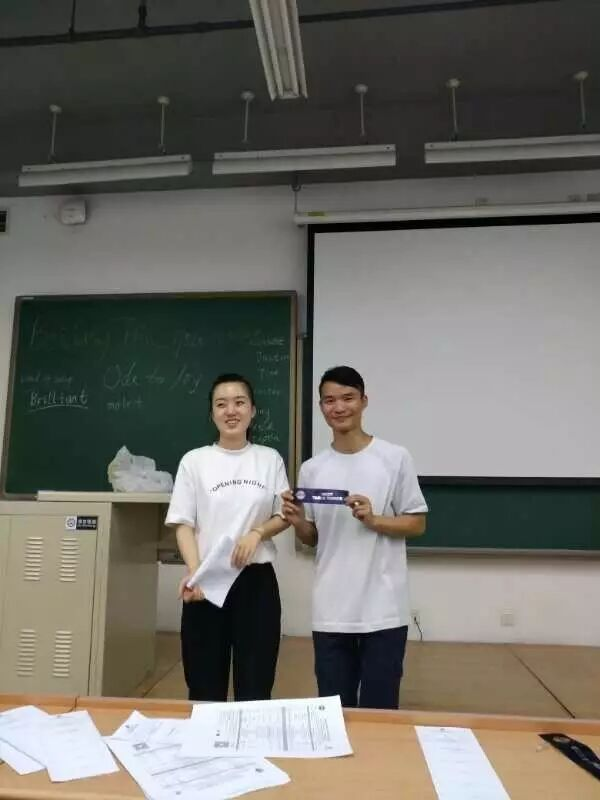
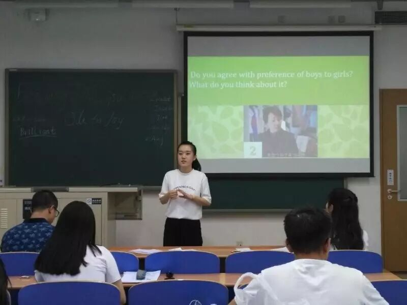
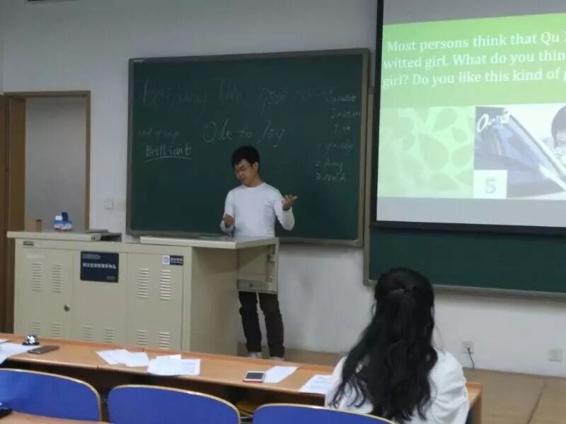
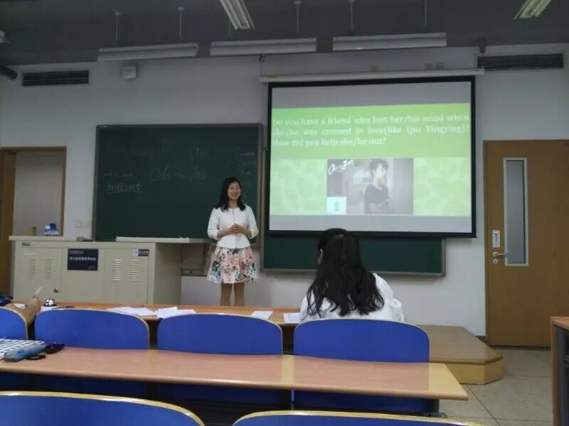
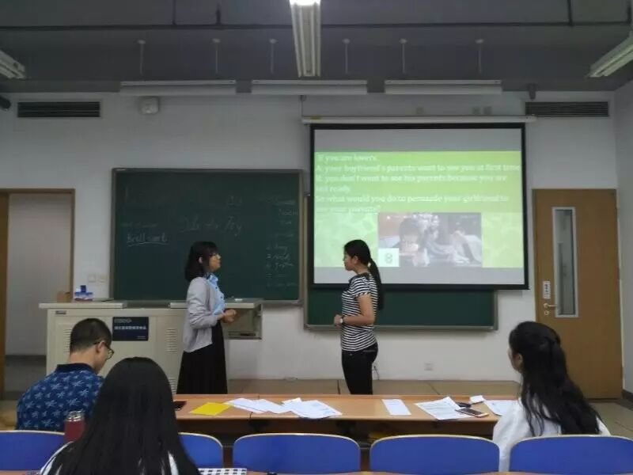
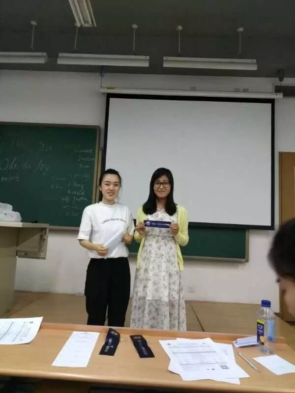
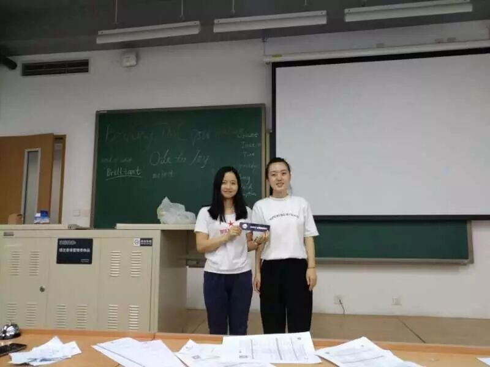
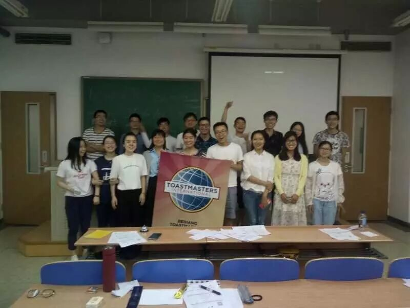

Did you have saw Ode to Joy that there grils have a lot of different characteristic for their life? I didn't.But i kown that it was the most popular TV show in last year. Tonight, We will discuss this TV show again.
1) Can you accept that the woman's income in much higher than the man's in the relationship?

Gastby said he can accepted that woman's income higher than his income, bacause the family is made by love,if you love her truely, you should accept the everything of her.
2)Do you agree with preference of the boys to girls?

Amy said she don't agree with that opinion,but there are a lot of phenomenon that perference of boys to girls in her hometown, she adapted it, but don't agree with it, girls also can do something else that men can't do, she want to fight for gril's right!
3)Most persons think that Qu XiaoXiao is a quick-witted girl what do you think,do you like her?

Nick said he also don't saw this TV show before, he think he will don't take opinion before,and shouldn't follow other's opinion, make friends of her. But he is a traditional man who can't accepted his girl friend molest other person.
4) If you inherit a great number of money(like Andy) what do you want to use money?
Justin said he want to create a foundation and give some money to country or help others people who needs helps.How kind he is!
5)Do you have a friend who lose her mind when she was crossed in love(like Qiu YingYing)? How did you help she out?

Grace said she have a lot of friend who lose her mind when she was crossed in love,and she also. but she think the most improtant thing is face the relation and enjoy the time.
6)A pair lovers, how you can persude your gril friend to see your parents?

They are classmate and come from China University of Geosciences,because the timer can't say the time rule's clearly and they are first time to come our meeting, so they have a litter bit nervous, hope your next time!
7)Do you have emotional cleanliness? How do you treat it(like Ying Qin) insists that his grilfriend should be a virgin?
Fiona said she don't agree with Ying Qin's opinion, because if you love someone truely, you should accept her everything, doesn't matter she is a virgin or not, you should accept it.
8)In our life, many person have low profile(like GuanGuan),are you a person like this? if you are, do you want to change?
Tony was a high-profile person who used to want to fly in the sky,he called himself Flair, but he know that there are difference between the dream and the reality, he accept the reality and want to change his life, but he want to be a low-profile person.
Bowen was graduated that he can't come to meeting everyweek, but he also want to improved his sociability, so he want to regaining the meaning of reading, he was read online by e-reader, if you want to know more detailes of reading, you should come to Bowen and ask him.
Kiki is back! Recently, she got a lot of problem that she have to give up study and go to the hospital.and she want to introduce a kind of cancer is destroying us, it called lazy cancer.Things that make you easy and make you lazy, thing that make you hard and make you hard.


